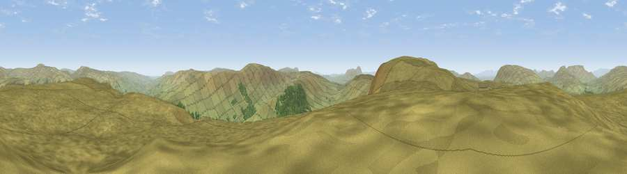

Viewpoint near Appersett
#7236 in England · top 15% of its area beats it · near Appersett · open accessWhere it is
The exact computed spot (SD 81175 88925). Click the marker for map links.
Public access: this spot lies on mapped open-access land (CRoW Act 2000) — you may roam here on foot. Computed from Natural England's CRoW access layer and OpenStreetMap rights of way — not the legal definitive map. Always verify locally.
The view, rendered

A 360° render of this exact spot computed from the terrain model, tree cover and land cover — summer colours, afternoon light, calibrated against photographs of famous viewpoints. Real trees, hedges and buildings will differ in detail.
The panorama
Grey silhouette: terrain skyline in each direction (720 bearings, Earth curvature and refraction included). Dashed green: skyline with trees (+15 m) and buildings (+8 m) as obstacles. Blue strip: how far the ground is visible on each bearing.
Where the view opens
Wedge length = distance to the farthest visible ground on that bearing (vegetation-aware). Rings at 10, 25 and 50 km.
What fills the view
97% grassland · 3% woodland
Angular shares of the visible panorama (visual magnitude), not map area. Landscape diversity 0.06 (0–1 Shannon).
Key numbers
More beautiful places nearby
The staircase of upgrades: each row has a higher view potential than everything closer. Driving times are estimates from straight-line distance, calibrated against real road routing — check an actual route before setting out.
| Place | Direction | Drive | Score |
|---|---|---|---|
| Viewpoint c9758_7607 | SW · 1 km | ~4 min | 69.5 |
| Great Knoutberry Hill | SW · 3 km | ~7 min | 74.2 |
| Viewpoint near Cotterdale | NE · 9 km | ~18 min | 74.4 |
| Whernside | SW · 10 km | ~20 min | 79.9 |
| Warton Crag | WSW · 36 km | ~54 min | 83.2 |
| Viewpoint near Finsthwaite | W · 42 km | ~62 min | 84.7 |
| Viewpoint near Finsthwaite | W · 42 km | ~62 min | 90.3 |
| The Knoll | S · 402 km | ~384 min | 91.0 |
54.29559, -2.29073 · source: screening · position refined by local search. Computed location — check access rights before visiting.